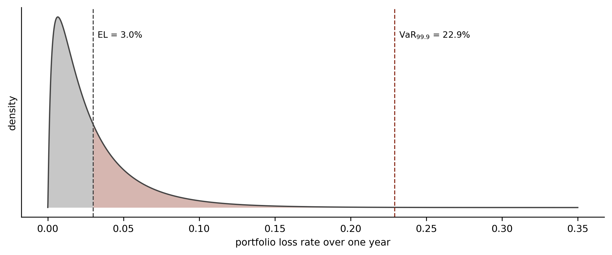
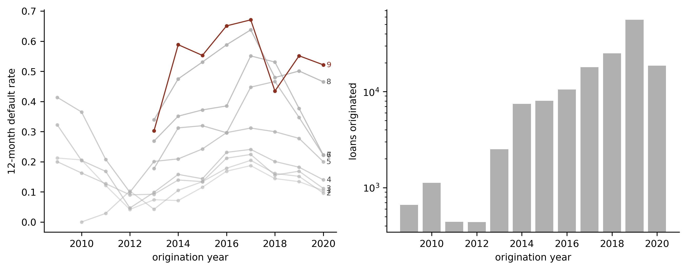
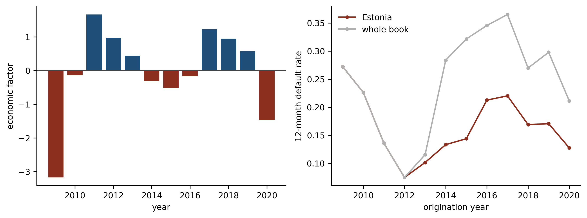
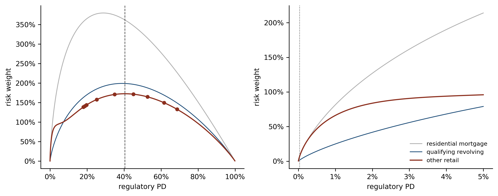

import numpy as np
import polars as pl
import pandas as pd
import matplotlib.pyplot as plt
import statsmodels.api as sm
import statsmodels.formula.api as smf
from scipy import stats as sps
from scipy.stats import norm
plt.rcParams.update({
"figure.figsize": (9, 4), "figure.dpi": 150, "font.size": 9,
"axes.spines.top": False, "axes.spines.right": False,
})
OX, GREY, RULE, BLUE = "#8C2F1E", "#B0B0B0", "#444444", "#1F4E79"
N, G = norm.cdf, norm.ppfCredit Lecture R2: Risk Grades, the Long-Run Average and IRB Capital
Deep Learning for Actuarial Modelling: a credit risk companion
Abstract
Credit lecture 1 derived Vasicek’s conditional default probability, observed in one sentence that the internal ratings-based capital formula is the same expression with the systematic factor stressed rather than averaged, and stopped. This lecture follows that sentence to a capital number. It runs the production sequence a bank actually runs, from a point-in-time scorecard through risk grades, a long-run average and a margin of conservatism to the regulatory probability of default, and then through the single-factor model to the worst-case default rate, the capital requirement and the risk weight. Every step is worked on the Bondora loan book, which has no internal ratings permission and never will, so the numbers illustrate mechanics rather than measuring capital. Three findings survive that caveat: the variance test the long-run average period is chosen by has almost no power at annual frequency, serial correlation in the default rate more than doubles the statistical margin of conservatism, and on a book this risky the Basel risk weight curve has already turned over.
1 What lecture 1 left unpaid
Lecture 1 closed its hybrid probability of default callout on a promise. Having built Vasicek’s conditional default probability and shown that averaging it over the systematic factor returns the through-the-cycle probability exactly, it noted that the capital formula is that same expression evaluated at the 99.9th percentile of the factor instead of at its mean, with the correlation prescribed by the regulation rather than fitted. Then it moved on.
This lecture pays that promise, and it pays it the long way round. Substituting one number into one formula takes a line. Producing the probability that goes into the formula takes a bank somewhere between six months and two years, and the sequence it follows is the subject here: estimate a point-in-time probability, group borrowers into risk grades, calibrate each grade to a long-run average, add a margin of conservatism, and only then hand the result to the capital function.
Lecture R1 took the other branch of the same callout. It separated the survival axis from the macroeconomic one, built the term structure that IFRS 9 consumes, and fitted a macro coefficient on the Bondora book. R1 and R2 therefore share their mathematics and differ in purpose: an accounting provision is measured at the middle of the factor distribution and a capital requirement in its tail.
1.1 Notation, and the three places it collides
Nothing here is renamed. Lecture 1 owns the worst-ever window flag \(D^{(k)}_{i,t}\), the origination month \(g_i\), the calendar identity \(u = g_i + t\), the macro state \(\boldsymbol{Z}_u\), the systematic factor \(Z_u\) with high values benign, the loading \(\rho\), the portfolio default rate \(\mathrm{DR}^{(k)}_u\) and the hybrid weight \(\lambda\). R1 adds the marginal probability \(f_{i,t}\) and the labels \(\mathrm{PD}^{\rm uPiT}\) and \(\mathrm{PD}^{\rm FiT}\).
This lecture adds the regulation’s own symbols and no others: the capital requirement per unit of exposure \(K\), the risk-weighted exposure amount \(\mathrm{RWA}\), expected and unexpected loss \(\mathrm{EL}\) and \(\mathrm{UL}\), loss given default \(\mathrm{LGD}\), exposure at default \(\mathrm{EAD}\), the worst-case default rate \(\mathrm{WCDR}\), the maturity adjustment \(\mathrm{MA}\) with its factor \(b\) and effective maturity \(M\), the margin of conservatism \(\mathrm{MoC}\), the regulatory probability \(\mathrm{PD}^{\rm Reg}\), and the risk grade index \(j = 1, \dots, J\).
Three collisions are worth stating once, because a reader moving between this lecture and the regulation will otherwise think one of the two is wrong.
2 Why the capital exists at all
A risk weight is a rule about the denominator of a ratio. Under Basel I a bank’s assets were sorted into four buckets, each carrying a weight between zero and 100 per cent, and minimum capital was set as a proportion of the weighted sum:
\[ \mathrm{RWA} = \sum_i \mathrm{Exposure}_i \times w_i , \qquad \frac{K}{\mathrm{RWA}} \ge 8\% . \]
Corporate loans took 100 per cent and residential mortgages 50, which is a judgement about relative risk with no model behind it and no sensitivity to the individual borrower. A bank lending only to the safest corporates held the same capital as one lending to the weakest.
Basel II kept the 8 per cent and replaced the buckets. Two routes appeared. The standardised approach refines the buckets and admits external credit ratings, subject to the supervisor recognising the rating agency and the bank performing its own due diligence, and it sets retail lending at 75 per cent and residential mortgages at 35. The internal ratings-based approach lets the bank supply the parameters instead, subject to permission, and the capital requirement becomes a value at risk computed over one year at a 99.9 per cent confidence level.
Two variants sit inside the internal approach. Under the foundation approach the bank estimates the probability of default alone, while loss given default, exposure at default and effective maturity are supervisory values. Under the advanced approach the bank estimates all of them. Retail exposures may only be treated under the advanced approach, which is the case this lecture is about, and there is no maturity adjustment for retail at all.
Because the framework was built around the Basel I habit of expressing risk as a percentage of an asset’s value, the capital requirement is converted back into a risk-weighted amount by multiplying by the reciprocal of the minimum ratio:
\[ \mathrm{RWA} = 12.5 \times K \times \mathrm{EAD} , \qquad 12.5 = 1/0.08 . \]
That is the whole of the plumbing. The rest of the lecture is about where \(K\) comes from.
3 Expected loss, unexpected loss and the gap capital covers
Everything downstream rests on one picture, so it is worth drawing before any formula. A credit portfolio has a distribution of losses over the coming year. That distribution is heavily right skewed, because most years are unremarkable and a few are catastrophic, and the framework picks two points on it.
def vasicek_pdf(x, p, rho):
"""Density of the asymptotic single-factor loss rate."""
a, b = G(x), G(p)
return (np.sqrt((1 - rho) / rho)
* np.exp(0.5 * (a**2 - ((np.sqrt(1 - rho) * a - b) / np.sqrt(rho))**2)))
P_TTC, RHO = 0.03, 0.15
x = np.linspace(1e-5, 0.35, 4000)
f = vasicek_pdf(x, P_TTC, RHO)
var999 = N((G(P_TTC) + np.sqrt(RHO) * G(0.999)) / np.sqrt(1 - RHO))
fig, ax = plt.subplots(figsize=(8, 3.4))
ax.plot(x, f, color=RULE, lw=1.2)
ax.fill_between(x[x <= P_TTC], f[x <= P_TTC], color=GREY, alpha=0.7, linewidth=0)
ax.fill_between(x[(x > P_TTC) & (x <= var999)], f[(x > P_TTC) & (x <= var999)],
color=OX, alpha=0.35, linewidth=0)
for v, lab in ((P_TTC, f"EL = {P_TTC:.1%}"), (var999, f"VaR$_{{99.9}}$ = {var999:.1%}")):
ax.axvline(v, color=RULE if v == P_TTC else OX, lw=1, ls="--")
ax.annotate(lab, (v, ax.get_ylim()[1] * 0.85), xytext=(4, 0),
textcoords="offset points", fontsize=8)
ax.set_xlabel("portfolio loss rate over one year")
ax.set_ylabel("density"); ax.set_yticks([])
plt.tight_layout(); plt.show()
print(f"EL {P_TTC:.2%} VaR(99.9%) {var999:.2%} "
f"UL {var999 - P_TTC:.2%} UL/EL {(var999 - P_TTC) / P_TTC:.1f}x")
EL 3.00% VaR(99.9%) 22.91% UL 19.91% UL/EL 6.6x3.1 Expected loss is a cost of doing business
Seen from the portfolio, expected loss is the mean of that distribution. Seen from the loans that make it up, it decomposes into three factors, and the decomposition is the more useful of the two views because a bank can estimate each factor separately:
\[ \mathrm{EL} = \sum_{i} \mathrm{PD}_i \times \mathrm{LGD}_i \times \mathrm{EAD}_i . \]
The probability of default is the chance the loss event happens over the chosen horizon, fixed at one year across every asset class in the Basel framework. Exposure at default is the amount outstanding when it happens, which for a revolving facility exceeds today’s balance because a distressed borrower draws down before defaulting. Loss given default is the proportion of that exposure never recovered.
Three numbers on a facility of 100 make the ordering concrete. At an exposure at default of 65 per cent of the limit, a loss given default of 30 per cent and a probability of default of 15 per cent, the amount at risk given default is 65, the amount likely to be lost given default is 19.5, and the expected loss is 2.93. Each factor conditions on the one before it, and confusing exposure at default with loss given default is the most common arithmetic error in the subject.
Expected loss is not, in the framework’s view, a risk. It is a forecastable cost, and a bank is expected to price for it and provide against it. Capital is held against unexpected loss alone.
3.2 Unexpected loss does not add up
Unexpected loss is the distance from the mean of the loss distribution to a chosen quantile of it, and it behaves in a way expected loss does not. Expected loss aggregates: the portfolio figure is the sum of the loan figures, because expectation is linear. Unexpected loss does not, because it depends on how losses move together.
\[ \mathrm{UL} = \sum_i \sigma_i \, \rho_i , \]
where \(\sigma_i\) is the standalone standard deviation of losses on facility \(i\) and \(\rho_i\) its correlation with the portfolio as a whole. A portfolio of perfectly independent loans has almost no unexpected loss at scale, since the idiosyncratic variation averages out. A portfolio whose borrowers all depend on the same economy does not, and the correlation is what remains after diversification has done its work.
The confidence level Basel chose is 99.9 per cent, meaning an institution is expected to suffer losses exceeding its capital roughly once in a thousand years. That is a high bar for a reason that has little to do with the true tail of the distribution: it protects against estimation error in the bank’s own probability, loss and exposure estimates, and against model uncertainty, as much as against credit events. Losses beyond it are stress loss, which is the region the framework judges too expensive to hold capital against and hands to Pillar 2 and to stress testing instead.
3.3 Conditional expected loss is the quantity the formula actually computes
The two ideas combine into the identity the capital function implements:
\[ \mathrm{UL} = \underbrace{\mathbb{E}\left[\text{loss} \mid Z = -\Phi^{-1}(0.999)\right]}_{\text{conditional expected loss}} - \mathrm{EL} . \]
Rather than modelling the whole loss distribution and reading a percentile off it, the framework conditions on a severe realisation of one systematic factor and takes an expectation given that realisation. Under the asymptotic single risk factor model those two operations coincide for an infinitely granular portfolio, which is the result section 7 derives and the reason the formula is a closed form rather than a simulation.
Two asymmetries in how the conditioning is done are worth noticing now, because both surface again later.
The probability of default is transformed and the loss given default is not. The bank reports an average probability reflecting normal conditions, and a supervisory mapping function converts it into a systemically conditional probability. No equivalent function exists for loss given default. The Basel Committee considered one and decided that practice was too varied to support a single supervisory mapping, so advanced banks are instead required to supply their own downturn loss given default, reflecting the fact that recoveries fall when collateral values do. One parameter is stressed by formula and the other by instruction.
The same factor realisation is applied to every exposure in the portfolio. That is what makes the model additive across loans and what makes concentration invisible to it. Section 7.6 returns to the price of that assumption.
3.4 Where the accounting number and the regulatory number meet
The same portfolio carries two expected loss figures at once, computed on different bases, and a bank has to reconcile them. Lecture R1 is where the accounting side is built; the contrast is tabulated there and this lecture points at it rather than repeating it.
The short version is that the accounting expected credit loss under IFRS 9 is point-in-time, probability-weighted across economic scenarios and discounted at the original effective interest rate, while the regulatory expected loss uses a through-the-cycle probability and a downturn loss given default and is not discounted. Consequently the two will almost never be equal, and the regulation treats the gap explicitly.
Where regulatory expected loss exceeds accounting provisions, the shortfall is deducted from Common Equity Tier 1 capital, on the reasoning that the bank has recognised less loss than the prudential basis requires and the difference is not really capital. Where provisions exceed regulatory expected loss, the excess is eligible as Tier 2 capital, subject to a cap expressed as a percentage of risk-weighted assets.
3.5 Defaulted exposures, named and not developed
Once a loan has defaulted its probability of default is one and all the uncertainty has moved into the recovery. The framework handles that case separately: the bank estimates a best estimate of expected loss on the specific defaulted exposure, which uses the granular information a default reveals rather than a portfolio average, and the capital requirement becomes \(K = \max\!\left(0, \mathrm{LGD}_{\rm downturn} - \mathrm{ELBE}\right)\) against the actual outstanding balance, since there is no further drawdown risk to stress.
That is the whole of what this lecture says about defaulted exposures. The scope here is the probability of default on performing loans, and loss given default in default is its own subject.
4 Rating philosophy, and what the regulation forces
Before a bank fits anything it has to decide what a rating is supposed to mean, and the decision is called the rating philosophy. Definitions by intent are useless here, because every bank will say its ratings reflect risk. The definition that works is behavioural, and it turns on two observable quantities as the economy moves.
Does a borrower’s grade change when the economy changes? That is grade migration.
Does the observed default rate within a fixed grade change when the economy changes? That is the grade’s cyclical stability.
The two are complements. A rating system that pushes all of the cyclical movement into migration leaves the default rate per grade flat, and one that pushes none of it into migration leaves the default rate per grade swinging with the cycle. Where a system sits between those poles is its philosophy.
4.1 Three philosophies
Through the cycle. Grades are assigned on characteristics that do not move with the economy, so nobody migrates. The whole of the cycle then shows up in the observed default rate within each grade, which is high in a recession and low in an expansion. Capital is stable, and the grade tells you nothing about whether the borrower is in trouble today.
Point in time. Grades are driven by whatever currently predicts default, including behavioural information such as arrears and utilisation, so borrowers migrate as their circumstances change. Some of the cycle is absorbed by migration and some remains in the grade-level default rate, which is why the observed rate per grade is described as semi-cyclical.
Dynamic point in time. A point-in-time model, recalibrated periodically so the assigned probability tracks the realised default rate. Migration then carries essentially all of the cyclical movement and the default rate per grade is flat across the cycle by construction.
| Philosophy | Grade migration | Default rate within a grade | The case for | The case against |
|---|---|---|---|---|
| Through the cycle | none | moves with the cycle | simple, cheap to maintain, needs no forecast and produces the most stable capital | says nothing about a borrower’s current condition, and struggles to show that it has used the relevant information the regulation expects it to use |
| Point in time | ratings migrate as risk drivers move | semi-cyclical | reflects current portfolio composition and current lending standards, and can score a borrower with no performance history | probabilities move, so representativeness has to be monitored continuously |
| Dynamic point in time | ratings migrate, and the calibration moves too | flat across the cycle | closest to a true current-conditions estimate, and the most accurate short-term capital number | recalibration is a recurring operational burden on backward-looking factors, and it makes risk-weighted assets swing with the economy |
All three are permissible. The Prudential Regulation Authority’s supervisory statement SS4/24 says so in its section on probability of default model development, and its policy statement PS9/24 contemplates firms choosing dynamic recalibration provided a suitable buffer accompanies it. The choice is a design decision the bank has to justify, not a compliance question with one right answer.
4.2 What the long-run average requirement forces on each
The binding constraint is calibration rather than philosophy. Article 180 of the Capital Requirements Regulation requires the probability assigned to a grade to be a long-run average of one-year default rates for that grade, estimated over a period spanning a mix of good and bad economic conditions, with a minimum observation period of five years. The European Banking Authority’s 2017 estimation guidelines put the same requirement more sharply: the reference period must capture a representative range of economic conditions including stress, and where the available history falls short, the answer is a margin of conservatism rather than a longer window stitched together from whatever data exists.
Read that against the three rows above and the pressure on each philosophy becomes visible.
A through-the-cycle system satisfies the calibration requirement almost trivially, because a grade whose membership never changes has a long-run average that is exactly what the requirement asks for. Its difficulty lies elsewhere, in demonstrating that the rating uses the relevant current information available about the borrower.
A point-in-time system has the opposite problem. Its grades are populated by different borrowers in different years, so an average of the grade’s historical default rates is an average over a moving population. The requirement is satisfiable, and satisfying it takes work: the grade boundaries have to be stable enough that the historical rates are comparable, which is what the grade construction tests in section 6.2 are for.
A dynamic point-in-time system is calibrated to track the current rate, which is the opposite of a long-run average, so the buffer PS9/24 contemplates is doing real work. Without it the calibration target and the regulatory target point in different directions.
4.3 Why a supervisor prefers the stable grade
The regulation’s preference for a smoothed probability is not an aesthetic one. Lowe’s 2002 Bank for International Settlements working paper sets out the mechanism, and it separates two effects that are easily conflated.
Measurement procyclicality is the obvious one. A rating system calibrated to recent experience assigns favourable parameters in an expansion, when defaults are low and collateral is expensive, so capital consumption falls and the bank looks well capitalised at exactly the moment credit standards are loosening. In a downturn the same machinery reverses, and the bank must raise capital on bad terms or contract lending, which deepens the contraction that caused the problem.
Structural procyclicality is the subtler one, and it survives even a rating system whose estimates are perfectly stable. The capital function is convex in the probability of default over the range most portfolios occupy, so a given rise in the probability produces a more than proportionate rise in required capital. Section 7.4 plots that curve and shows both the convexity and, at very high probabilities, where it stops.
Consequently the supervisor’s preference for a stable grade-level probability is a preference about the second derivative of the capital function rather than about measurement philosophy, and it is why Basel III added a countercyclical buffer on top rather than trying to fix the risk weight itself.
4.4 The same data, calibrated twice
IFRS 9 wants the philosophy this section has just argued against. It wants a probability that moves with current conditions and with forecasts of future ones, updated monthly, at contract level, out to the lifetime of the exposure. The internal ratings-based approach wants a probability smoothed across the cycle, updated annually, at counterparty level, at twelve months, with a floor under it.
Lecture R1 tabulates that contrast row by row and this lecture will not repeat the table. The point to carry forward is the one the model documentation makes: the two regimes share a rank ordering and differ in calibration. A bank builds one scorecard, uses its output directly for the accounting number, and then puts it through steps 3 to 5 of the sequence above for the regulatory number. Everything that follows in this lecture is those three steps.
5 The five-step sequence
A bank does not produce a regulatory probability of default in one step, and the sequence it does follow is the organising structure of everything below.
- Point-in-time probability of default estimation. Fit a model that ranks borrowers by current credit quality.
- Risk grade assignment. Bin the model’s output into a discrete scale.
- Long-run average probability of default. Calibrate each grade to the average of its observed one-year default rates over a period spanning good and bad years.
- Margin of conservatism. Add an uplift covering data deficiencies, changes in the business, and the statistical uncertainty in the long-run average itself.
- Regulatory probability of default. The calibrated probability plus the margin, discrete at the grade level.
Those five split cleanly into two phases, and the split is worth holding onto because the tests differ completely between them.
Risk differentiation covers steps 1 and 2, and asks a single question: does the model rank borrowers correctly? It is judged on discrimination, accuracy, stability and robustness, and it is indifferent to the level of the estimates.
Risk quantification covers steps 3 to 5, and asks the opposite question: is the level right? It is judged on concentration, homogeneity within a grade, heterogeneity between grades, migration and calibration accuracy, and it takes the rank ordering as given.
The division has a consequence the lecture should not lose. Strip out the long-run average adjustment, the margin of conservatism and the downturn adjustment, and the same models feed IFRS 9 expected credit loss. The two frameworks share a rank ordering and differ in calibration, which is why a bank builds one scorecard and calibrates it twice.
6 The five steps on Bondora
6.1 Step 1: the point-in-time model
The scorecard is lecture 1’s GLM3, reused unchanged so the two lectures agree: a Bernoulli regression with a logit link on age class, log income and country, fitted to the twelve-month default flag. It is a deliberately thin model, and section 8 asks what a validator would make of it.
dat = pl.read_parquet("../data/bondora_pd.parquet")
model_dat = (dat.filter(pl.col("Age").is_not_null() & (pl.col("IncomeTotal") > 0))
.with_columns(logIncome=pl.col("IncomeTotal").log()))
AGE_CUTS = [18, 20, 25, 30, 40, 50, 60, 70, 101]
AGE_LABELS = ["18-20", "21-25", "26-30", "31-40", "41-50", "51-60", "61-70", "71+"]
book = model_dat.select(
["default_12m", "Age", "logIncome", "Country", "LoanDate", "Rating"]).to_pandas()
book["AgeClass"] = pd.cut(book["Age"], AGE_CUTS, labels=AGE_LABELS, include_lowest=True)
book["cohort"] = pd.to_datetime(book["LoanDate"]).dt.year
pit_model = smf.glm("default_12m ~ AgeClass + logIncome + Country",
data=book, family=sm.families.Binomial()).fit()
book["pit"] = pit_model.predict(book)
print(f"loans {len(book):,} observed default rate {book.default_12m.mean():.2%} "
f"mean fitted PD {book.pit.mean():.2%}")
print(f"fitted PD spans {book.pit.min():.2%} to {book.pit.max():.2%} "
f"cohorts {book.cohort.min()} to {book.cohort.max()}")loans 148,670 observed default rate 28.95% mean fitted PD 28.95%
fitted PD spans 0.00% to 80.77% cohorts 2009 to 2020The fitted probability and the observed rate agree at the portfolio level, which they must for a generalised linear model with a canonical link and an intercept. That is the balance property the course lecture 7 makes so much of, and it is worth noticing that it holds here for free and will not survive step 3.
6.2 Step 2: risk grades
Grade construction is the step where regulation, rather than statistics, decides the answer. The requirements are that the scale be discrete, that probabilities rise monotonically across it, that no grade holds too little of the portfolio to calibrate reliably or so much that it encodes nothing, that borrowers within a grade have similar default rates, and that adjacent grades have different ones. A bank must also maintain at least seven grades for non-defaulted exposures plus one for those in default.
The procedure follows from those constraints. Rank the book on the fitted probability, cut it into fine bins, then merge adjacent bins until every constraint holds.
MIN_SHARE, MAX_SHARE = 0.01, 0.30
def build_grades(pit, y, n_fine, min_share=MIN_SHARE):
"""Fine quantile bins, merged upwards until the volume floor and monotone
observed default rates both hold. Merging adjacent bins is the only move,
so the grades stay intervals of the score."""
edges = np.unique(np.quantile(pit, np.linspace(0, 1, n_fine + 1)))
edges[0], edges[-1] = -np.inf, np.inf
fine = np.digitize(pit, edges[1:-1])
groups = [[k] for k in range(fine.max() + 1)]
n_tot = len(pit)
def stat(gr):
m = np.isin(fine, gr)
return m.sum(), y[m].mean()
for _ in range(1000):
s = [stat(gr) for gr in groups]
small = [i for i, (n, _) in enumerate(s) if n < min_share * n_tot]
if small: # volume floor first
i = small[0]
j = i + 1 if i == 0 else i - 1
groups[min(i, j)] = sorted(groups[i] + groups[j])
del groups[max(i, j)]
continue
breaks = [i for i in range(len(s) - 1) if s[i][1] >= s[i + 1][1]]
if breaks: # then monotonicity
i = breaks[0]
groups[i] = sorted(groups[i] + groups[i + 1])
del groups[i + 1]
continue
break
lab = np.empty(len(pit), dtype=int)
for k, gr in enumerate(groups, start=1):
lab[np.isin(fine, gr)] = k
return labHow fine to cut before merging is the one free parameter, and it decides how many grades come out. The guides’ own process tests several candidate schemes against the regulatory objectives and picks one, so this does the same.
def z_between(n1, d1, n2, d2):
"""Two-proportion z-test on adjacent grades. Small p means they differ."""
p1, p2 = d1 / n1, d2 / n2
p = (d1 + d2) / (n1 + n2)
se = np.sqrt(p * (1 - p) * (1 / n1 + 1 / n2))
return 2 * (1 - sps.norm.cdf(abs(p1 - p2) / se)) if se > 0 else 1.0
def chi2_within(y, rng, reps=20, rate=0.05):
"""Chi-square across bootstrapped subsamples of one grade. Small p means the
grade is not homogeneous."""
base, obs, exp = y.mean(), [], []
for _ in range(reps):
s = y[rng.random(len(y)) < rate]
if len(s) < 30:
continue
obs.append(s.sum()); exp.append(base * len(s))
if len(obs) < 5:
return 1.0
obs, exp = np.array(obs), np.array(exp)
return 1 - sps.chi2.cdf(((obs - exp) ** 2 / exp).sum(), len(obs) - 1)
rng = np.random.default_rng(7)
candidates = []
for n_fine in (10, 15, 25, 50):
lab = build_grades(book.pit.values, book.default_12m.values, n_fine)
t = pd.DataFrame({"grade": lab, "y": book.default_12m.values})
agg = t.groupby("grade").agg(n=("y", "size"), d=("y", "sum"), odr=("y", "mean"))
share = agg.n / len(t)
het = [z_between(agg.n.iloc[i], agg.d.iloc[i], agg.n.iloc[i + 1], agg.d.iloc[i + 1])
for i in range(len(agg) - 1)]
hom = [chi2_within(t.y[t.grade == k].values, rng) for k in agg.index]
candidates.append({
"fine bins": n_fine, "grades": len(agg),
"min %": round(share.min() * 100, 2), "max %": round(share.max() * 100, 2),
"HHI": round((share ** 2).sum(), 4),
"heterogeneity fails %": round(100 * np.mean(np.array(het) > 0.10), 1),
"homogeneity fails %": round(100 * np.mean(np.array(hom) < 0.05), 1)})
pd.DataFrame(candidates).set_index("fine bins")| grades | min % | max % | HHI | heterogeneity fails % | homogeneity fails % | |
|---|---|---|---|---|---|---|
| fine bins | ||||||
| 10 | 9 | 9.65 | 19.98 | 0.1200 | 0.0 | 0.0 |
| 15 | 13 | 6.49 | 13.13 | 0.0834 | 16.7 | 0.0 |
| 25 | 21 | 3.64 | 11.93 | 0.0559 | 45.0 | 0.0 |
| 50 | 30 | 1.70 | 11.93 | 0.0496 | 72.4 | 0.0 |
That table earns its place, because the trade-off in it is the whole reason grade construction is iterative. Every scheme is monotone and every scheme clears the volume bounds and the concentration test, since the merging procedure enforces all three by construction. What granularity costs is separation: at nine grades no adjacent pair is statistically indistinguishable, at thirteen one pair in six is, and at thirty nearly three quarters are. A finer scale looks more discriminating and is mostly reporting noise.
Nine grades it is. That clears the seven-grade minimum with room to spare and passes every test.
book["grade"] = build_grades(book.pit.values, book.default_12m.values, 10)
grades = (book.groupby("grade")
.agg(loans=("default_12m", "size"), defaults=("default_12m", "sum"),
odr=("default_12m", "mean"), pd_lo=("pit", "min"),
pd_hi=("pit", "max"), pd_mean=("pit", "mean")))
grades["share"] = grades.loans / len(book)
grades[["loans", "defaults", "share", "pd_lo", "pd_hi", "pd_mean", "odr"]].style.format({
"loans": "{:,.0f}", "defaults": "{:,.0f}", "share": "{:.1%}",
"pd_lo": "{:.2%}", "pd_hi": "{:.2%}", "pd_mean": "{:.2%}", "odr": "{:.2%}"})| loans | defaults | share | pd_lo | pd_hi | pd_mean | odr | |
|---|---|---|---|---|---|---|---|
| grade | |||||||
| 1 | 29,701 | 4,133 | 20.0% | 0.00% | 14.90% | 14.07% | 13.92% |
| 2 | 14,351 | 2,136 | 9.7% | 14.90% | 15.73% | 15.33% | 14.88% |
| 3 | 15,413 | 2,531 | 10.4% | 15.73% | 16.59% | 16.06% | 16.42% |
| 4 | 14,869 | 2,763 | 10.0% | 16.60% | 21.17% | 18.73% | 18.58% |
| 5 | 14,768 | 3,962 | 9.9% | 21.19% | 34.21% | 27.14% | 26.83% |
| 6 | 14,967 | 5,315 | 10.1% | 34.21% | 36.78% | 35.40% | 35.51% |
| 7 | 14,863 | 5,870 | 10.0% | 36.78% | 43.77% | 38.69% | 39.49% |
| 8 | 14,871 | 7,736 | 10.0% | 43.77% | 53.87% | 51.31% | 52.02% |
| 9 | 14,867 | 8,587 | 10.0% | 53.88% | 80.77% | 58.56% | 57.76% |
hhi = float((grades.share ** 2).sum())
het_p = [z_between(grades.loans.iloc[i], grades.defaults.iloc[i],
grades.loans.iloc[i + 1], grades.defaults.iloc[i + 1])
for i in range(len(grades) - 1)]
hom_p = [chi2_within(book.default_12m.values[book.grade.values == k], rng)
for k in grades.index]
print(f"concentration: max grade {grades.share.max():.1%} of the book, "
f"min {grades.share.min():.1%}, HHI {hhi:.4f} against a 0.25 threshold")
print(f"heterogeneity: largest p-value between adjacent grades {max(het_p):.4f}")
print(f"homogeneity: smallest p-value within a grade {min(hom_p):.4f}")
print(f"monotonicity: {'holds' if grades.odr.is_monotonic_increasing else 'BREAKS'}, "
f"{grades.odr.iloc[0]:.1%} to {grades.odr.iloc[-1]:.1%}")concentration: max grade 20.0% of the book, min 9.7%, HHI 0.1200 against a 0.25 threshold
heterogeneity: largest p-value between adjacent grades 0.0064
homogeneity: smallest p-value within a grade 0.4050
monotonicity: holds, 13.9% to 57.8%One test the guides list cannot be run here at all. Grade migration asks how often a borrower moves grade between consecutive observation dates, and the fixed-horizon table observes each loan exactly once. A bank would build the migration matrix from monthly snapshots and read off the proportion staying within one band; the survival table lecture S1 uses could support that and it is outside this lecture’s scope.
6.3 Step 3: observed default rates by grade and cohort
The long-run average is an average of one-year default rates, so the rates have to exist as a time series before anything can be averaged. Splitting the book by grade and origination year gives that series, and it also gives the first honest look at what this portfolio is.
cell = (book.groupby(["grade", "cohort"])["default_12m"]
.agg(["size", "mean"]).reset_index())
cell = cell[cell["size"] >= 30]
fig, axs = plt.subplots(1, 2, figsize=(9, 3.6))
for k in sorted(book.grade.unique()):
s = cell[cell.grade == k]
axs[0].plot(s.cohort, s["mean"], "-o", ms=2.5, lw=1,
color=OX if k == 9 else GREY,
alpha=1.0 if k == 9 else 0.35 + 0.06 * k)
if len(s):
axs[0].annotate(f"{k}", (s.cohort.iloc[-1], s["mean"].iloc[-1]),
xytext=(3, -2), textcoords="offset points", fontsize=7,
color=OX if k == 9 else RULE)
axs[0].set_xlabel("origination year"); axs[0].set_ylabel("12-month default rate")
n_by_year = book.groupby("cohort").size()
axs[1].bar(n_by_year.index, n_by_year.values, color=GREY)
axs[1].set_yscale("log"); axs[1].set_xlabel("origination year")
axs[1].set_ylabel("loans originated")
plt.tight_layout(); plt.show()
6.4 Step 4: the long-run average, and the period it is taken over
Two decisions sit inside a long-run average and only one of them is arithmetic.
The arithmetic decision is what to average. An average of annual rates is not the rate of the pooled data, because the cohorts differ enormously in size, and the regulation asks for the former.
WINDOW = range(2009, 2021)
win = book[book.cohort.isin(WINDOW)]
annual = (win.groupby(["grade", "cohort"])["default_12m"]
.agg(["size", "mean"]).reset_index())
annual = annual[annual["size"] >= 30]
lra = annual.groupby("grade")["mean"].agg(lra="mean", sd="std", years="count")
grades = grades.join(lra)
cmp = grades[["odr", "lra", "years"]].copy()
cmp["difference"] = cmp.lra - cmp.odr
cmp.style.format({"odr": "{:.2%}", "lra": "{:.2%}",
"years": "{:.0f}", "difference": "{:+.2%}"})| odr | lra | years | difference | |
|---|---|---|---|---|
| grade | ||||
| 1 | 13.92% | 13.16% | 12 | -0.75% |
| 2 | 14.88% | 10.95% | 11 | -3.94% |
| 3 | 16.42% | 15.14% | 12 | -1.28% |
| 4 | 18.58% | 17.79% | 12 | -0.79% |
| 5 | 26.83% | 26.03% | 12 | -0.80% |
| 6 | 35.51% | 32.36% | 8 | -3.15% |
| 7 | 39.49% | 38.23% | 8 | -1.26% |
| 8 | 52.02% | 50.21% | 8 | -1.81% |
| 9 | 57.76% | 53.43% | 8 | -4.33% |
The long-run average comes out below the pooled rate in every grade. The reason is that Bondora’s largest cohorts are its most recent and its riskiest, so pooling weights the bad years heavily while averaging the annual rates does not. A bank meets the same effect whenever its book has grown, and the direction is not always favourable.
The judgement decision is the period. Article 180 sets a five-year minimum and requires a mix of good and bad years, and SS4/24’s calibration section expands on it: consider the variability of the observed one-year default rates, the balance of good and bad years measured against the macroeconomic variables that actually drive the exposures, and any structural change in the economic, legal or business environment. The four-step procedure below is the standard way of turning those words into a defensible window.
6.4.1 Deriving an economic factor
Three Eurostat series carry the economic state: the harmonised unemployment rate, annual HICP inflation, and real gross domestic product growth year on year. A principal component compresses them into one index, oriented so that a high value means benign conditions.
MV = ["unemployment", "inflation", "gdp_growth"]
macro = pl.read_csv("data/macro_eurostat.csv", comment_prefix="#").to_pandas()
ee = macro[macro.country == "EE"].copy()
ee["cohort"] = ee.month.str.slice(0, 4).astype(int)
annual_macro = ee[ee.cohort.isin(WINDOW)].groupby("cohort")[MV].mean()
Z = ((annual_macro - annual_macro.mean()) / annual_macro.std(ddof=0)).values
_, sv, vt = np.linalg.svd(Z, full_matrices=False)
loading = vt[0]
factor = Z @ loading
if np.corrcoef(factor, annual_macro.unemployment)[0, 1] > 0: # orient: high = benign
factor, loading = -factor, -loading
factor = pd.Series(factor, index=annual_macro.index)
print(f"first principal component explains {sv[0] ** 2 / (sv ** 2).sum():.1%} "
"of the variance in the three standardised series")
print("loadings (high factor = benign): "
+ " ".join(f"{v} {l:+.3f}" for v, l in zip(MV, loading)))first principal component explains 53.5% of the variance in the three standardised series
loadings (high factor = benign): unemployment -0.203 inflation +0.647 gdp_growth +0.735The loadings say something worth pausing on. Growth and inflation dominate the index while unemployment barely enters it, which looks wrong until the series are read: Estonian unemployment peaked in 2010, a full year after output had bottomed out and begun recovering. Unemployment is a lagging indicator, and a factor built to date the cycle should not be led by one.
Only Estonia is used. Lecture R1 established that a macroeconomic coefficient fitted across Bondora’s three markets comes back with economically backwards signs, because the Finnish and Spanish books opened in 2013 and expanded through a period of steadily falling unemployment, so within those markets the lender’s own descent down the credit spectrum runs against the cycle. Estonia is the only market observed through the 2009 downturn, and this lecture inherits that restriction rather than rediscovering the failure.
6.4.2 Classifying good and bad years, and marking the cycle
ee_rate = win[win.Country == "EE"].groupby("cohort")["default_12m"].mean()
all_rate = win.groupby("cohort")["default_12m"].mean()
state = pd.DataFrame({
"factor": factor.round(2),
"state": np.where(factor > 0, "good", "bad"),
"EE default rate": ee_rate.round(4),
"whole-book default rate": all_rate.round(4)})
print(state.to_string())
print(f"\ngood years {int((factor > 0).sum())}, bad years {int((factor <= 0).sum())}")
print(f"correlation of the factor with the Estonian default rate "
f"{np.corrcoef(factor, ee_rate)[0, 1]:+.3f}")
print(f"correlation of the factor with the whole-book rate "
f"{np.corrcoef(factor, all_rate)[0, 1]:+.3f}") factor state EE default rate whole-book default rate
cohort
2009 -3.17 bad 0.2722 0.2722
2010 -0.14 bad 0.2262 0.2262
2011 1.66 good 0.1357 0.1357
2012 0.97 good 0.0750 0.0750
2013 0.44 good 0.1016 0.1155
2014 -0.32 bad 0.1334 0.2837
2015 -0.52 bad 0.1439 0.3215
2016 -0.17 bad 0.2127 0.3455
2017 1.22 good 0.2203 0.3651
2018 0.94 good 0.1691 0.2699
2019 0.57 good 0.1707 0.2978
2020 -1.47 bad 0.1277 0.2113
good years 6, bad years 6
correlation of the factor with the Estonian default rate -0.441
correlation of the factor with the whole-book rate -0.226fig, axs = plt.subplots(1, 2, figsize=(9, 3.4))
axs[0].axhline(0, color=RULE, lw=0.8)
axs[0].bar(factor.index, factor.values,
color=[BLUE if v > 0 else OX for v in factor.values])
axs[0].set_xlabel("year"); axs[0].set_ylabel("economic factor")
axs[1].plot(ee_rate.index, ee_rate.values, "-o", ms=3, color=OX, label="Estonia")
axs[1].plot(all_rate.index, all_rate.values, "-o", ms=3, color=GREY,
label="whole book")
axs[1].set_xlabel("origination year"); axs[1].set_ylabel("12-month default rate")
axs[1].legend(frameon=False)
plt.tight_layout(); plt.show()
Six good years and six bad, which is as balanced as a window gets. The factor also dates the cycle: a deep trough in 2009, a peak in 2011, a second trough running 2014 to 2016, a second peak in 2017, and the pandemic in 2020. A peak-to-peak cycle is therefore 2011 to 2017, which is seven years and, awkwardly, excludes the only genuine downturn in the data.
6.4.3 Testing the window
The remaining step compares the variability of the observed default rates inside a candidate window against their variability over the reference cycle, using an F-test on the two variances. A window whose variability differs materially from the cycle’s is not representative of it.
def f_test(a, b):
"""Two-sided F-test on two variances, larger over smaller."""
va, vb = np.var(a, ddof=1), np.var(b, ddof=1)
(hi, lo), (d1, d2) = ((va, vb), (len(a) - 1, len(b) - 1)) if va >= vb \
else ((vb, va), (len(b) - 1, len(a) - 1))
stat = hi / lo
return stat, 2 * (1 - sps.f.cdf(stat, d1, d2))
full = ee_rate.loc[2009:2020]
rows = []
for a, b in [(2009, 2020), (2011, 2017), (2013, 2020), (2014, 2020),
(2015, 2020), (2016, 2020)]:
w, fw = ee_rate.loc[a:b], factor.loc[a:b]
comp = ee_rate.drop(index=range(a, b + 1), errors="ignore")
f1, p1 = f_test(w.values, full.values)
f2, p2 = f_test(w.values, comp.values) if len(comp) > 1 else (np.nan, np.nan)
rows.append({"window": f"{a}-{b}", "years": len(w),
"good": int((fw > 0).sum()), "bad": int((fw <= 0).sum()),
"LRA": w.mean(), "sd": w.std(),
"F vs cycle": f1, "p": p1,
"F vs complement": f2, "p ": p2})
pd.DataFrame(rows).set_index("window").style.format(
{"LRA": "{:.2%}", "sd": "{:.4f}", "F vs cycle": "{:.2f}", "p": "{:.3f}",
"F vs complement": "{:.2f}", "p ": "{:.3f}"}, na_rep="")| years | good | bad | LRA | sd | F vs cycle | p | F vs complement | p | |
|---|---|---|---|---|---|---|---|---|---|
| window | |||||||||
| 2009-2020 | 12 | 6 | 6 | 16.57% | 0.0575 | 1.00 | 1.000 | ||
| 2011-2017 | 7 | 4 | 3 | 14.61% | 0.0536 | 1.15 | 0.906 | 1.11 | 0.868 |
| 2013-2020 | 8 | 4 | 4 | 15.99% | 0.0415 | 1.93 | 0.394 | 4.57 | 0.089 |
| 2014-2020 | 7 | 3 | 4 | 16.83% | 0.0368 | 2.44 | 0.285 | 5.19 | 0.075 |
| 2015-2020 | 6 | 3 | 3 | 17.41% | 0.0367 | 2.46 | 0.330 | 4.29 | 0.136 |
| 2016-2020 | 5 | 3 | 2 | 18.01% | 0.0375 | 2.35 | 0.425 | 3.43 | 0.253 |
Every candidate passes, including one that excludes the 2009 crisis outright. That result is the opposite of the one this section was expected to produce, and taking it at face value would be a mistake. The test has essentially no power at annual frequency.
def f_power(ratio, n1, n2, alpha=0.05):
d1, d2 = n1 - 1, n2 - 1
lo, hi = sps.f.ppf(alpha / 2, d1, d2), sps.f.ppf(1 - alpha / 2, d1, d2)
return sps.f.sf(hi / ratio, d1, d2) + sps.f.cdf(lo / ratio, d1, d2)
for n1, n2, label in [(8, 12, "8 against 12 annual rates"),
(96, 144, "the same windows in monthly cohorts")]:
r = np.linspace(1.01, 40, 8000)
p = np.array([f_power(x, n1, n2) for x in r])
r80 = r[np.argmax(p >= 0.80)]
print(f"{label:36s} power at a doubled variance {f_power(2, n1, n2):.0%} "
f"variance ratio needed for 80% power {r80:.1f}x "
f"(a {np.sqrt(r80):.1f}x difference in standard deviation)")8 against 12 annual rates power at a doubled variance 17% variance ratio needed for 80% power 7.2x (a 2.7x difference in standard deviation)
the same windows in monthly cohorts power at a doubled variance 96% variance ratio needed for 80% power 1.7x (a 1.3x difference in standard deviation)A window has to have roughly seven times the variance of the cycle before this test notices, on eight annual observations. Move to monthly cohorts and the same comparison detects a 1.7-fold difference, which is the range real windows differ by. The F-test is a good test computed at the wrong frequency, and passing it here is close to no evidence at all.
Consequently the window is chosen on the qualitative criteria the regulation states first, and the test is reported as the weak corroboration it is. The window is 2009 to 2020: it is the longest available, it splits six good years against six bad, and it is the only window containing the single downturn this book has lived through. Excluding the pandemic year would be defensible on the reasoning that payment holidays and state support suppressed defaults artificially, and it is not done here, because dropping the second of only two stress episodes to gain nothing measurable is a poor trade.
6.5 Step 5: the margin of conservatism
The margin exists because the calibrated probability is an estimate and estimates are wrong in both directions, while capital is only allowed to be wrong in one. The European Central Bank’s guide to internal models splits it into three types, and the split is useful because the three call for completely different evidence.
Type A covers deficiencies in the data and the method. On this book that would include the absence of any behavioural information, a default definition derived from a status field rather than from days past due, an outcome window opening at origination rather than at a calendar snapshot, and above all the four grades with no observations before 2013.
Type B covers changes in underwriting standards, risk appetite, and collection and recovery policy. Bondora’s expansion into Finland and Spain, and its accompanying move down the credit spectrum, is a Type B adjustment of the first order: the development sample is not representative of the current book because the lender deliberately changed what it lends.
Type C covers the general estimation error in the long-run average itself, and it is the one that can be computed rather than argued. Paragraph 327 of the guide requires the autocorrelation of the default rate series to be reflected in it, and the requirement has teeth.
port = win.groupby("cohort")["default_12m"].mean()
dev = port.values - port.values.mean()
phi = float(np.sum(dev[1:] * dev[:-1]) / np.sum(dev ** 2))
z95 = sps.norm.ppf(0.95)
grades["n_eff"] = grades.years * (1 - phi) / (1 + phi)
grades["moc_naive"] = z95 * grades.sd / np.sqrt(grades.years)
grades["moc_c"] = z95 * grades.sd / np.sqrt(grades.n_eff)
print(f"first-order autocorrelation of the annual default rate: phi = {phi:.3f}")
print(f"a {grades.years.max():.0f}-year series is worth {grades.n_eff.max():.1f} "
"independent observations\n")
grades[["lra", "sd", "years", "n_eff", "moc_naive", "moc_c"]].style.format({
"lra": "{:.2%}", "sd": "{:.4f}", "years": "{:.0f}", "n_eff": "{:.1f}",
"moc_naive": "{:.2%}", "moc_c": "{:.2%}"})first-order autocorrelation of the annual default rate: phi = 0.656
a 12-year series is worth 2.5 independent observations
| lra | sd | years | n_eff | moc_naive | moc_c | |
|---|---|---|---|---|---|---|
| grade | ||||||
| 1 | 13.16% | 0.0546 | 12 | 2.5 | 2.59% | 5.69% |
| 2 | 10.95% | 0.0649 | 11 | 2.3 | 3.22% | 7.06% |
| 3 | 15.14% | 0.0444 | 12 | 2.5 | 2.11% | 4.62% |
| 4 | 17.79% | 0.0711 | 12 | 2.5 | 3.37% | 7.40% |
| 5 | 26.03% | 0.0849 | 12 | 2.5 | 4.03% | 8.83% |
| 6 | 32.36% | 0.0992 | 8 | 1.7 | 5.77% | 12.65% |
| 7 | 38.23% | 0.1134 | 8 | 1.7 | 6.60% | 14.46% |
| 8 | 50.21% | 0.0892 | 8 | 1.7 | 5.19% | 11.38% |
| 9 | 53.43% | 0.1192 | 8 | 1.7 | 6.93% | 15.20% |
The default rate series is strongly autocorrelated, at \(\phi = 0.66\), which is what the systematic factor’s own persistence produces. Correcting the effective sample size for it takes twelve annual observations down to about two and a half, and the margin of conservatism correspondingly up:
print(f"Type C uplift, autocorrelation-adjusted against naive: "
f"{(grades.moc_c / grades.moc_naive).mean():.2f}x")Type C uplift, autocorrelation-adjusted against naive: 2.19xAn institution using the textbook standard error of the mean would understate this component by a factor of more than two. That is the entire content of paragraph 327 and it is not a subtle effect.
Only Type C is quantified here, because Types A and B are sized against a model’s own deficiency register and this book does not have one. On a real submission the three would be combined and the total would be considerably larger than the figure below.
grades["pd_reg"] = np.minimum(grades.lra + grades.moc_c, 0.9999)6.6 One grade, end to end
The point of the whole sequence is that a single number can be traced through it. Grade 5 sits in the middle of the scale and is as good a witness as any.
trace = grades.loc[5]
steps = pd.DataFrame({
"quantity": ["1. point-in-time PD, mean over the grade",
"2. grade assignment: score interval",
"2. grade assignment: share of the book",
"3. pooled observed default rate",
"3. long-run average over 2009-2020",
"4. margin of conservatism, Type C",
"5. regulatory PD"],
"value": [f"{trace.pd_mean:.2%}",
f"{trace.pd_lo:.2%} to {trace.pd_hi:.2%}",
f"{trace.share:.1%} ({trace.loans:,.0f} loans)",
f"{trace.odr:.2%}",
f"{trace.lra:.2%} (mean of {trace.years:.0f} annual rates)",
f"+{trace.moc_c:.2%}",
f"{trace.pd_reg:.2%}"]})
steps.style.hide(axis="index")| quantity | value |
|---|---|
| 1. point-in-time PD, mean over the grade | 27.14% |
| 2. grade assignment: score interval | 21.19% to 34.21% |
| 2. grade assignment: share of the book | 9.9% (14,768 loans) |
| 3. pooled observed default rate | 26.83% |
| 3. long-run average over 2009-2020 | 26.03% (mean of 12 annual rates) |
| 4. margin of conservatism, Type C | +8.83% |
| 5. regulatory PD | 34.87% |
Three things happen along that column and each is worth naming.
The point-in-time probability and the pooled default rate agree, at 27.1 against 26.8 per cent, because the model is calibrated by construction and the grade is an interval of its own output.
The long-run average sits below both, at 26.0 per cent, because averaging annual rates un-weights the large recent cohorts that pooling had over-weighted.
The margin of conservatism then pushes the answer well above where it started, to 34.9 per cent. The regulatory probability of default is nearly 30 per cent higher than the model’s own estimate for the same borrowers, and every point of that gap comes from the shortness and the serial correlation of a twelve-year annual series. That is the balance property being broken deliberately, which is the thing to hold onto from this section: a calibrated model is what step 1 delivers and a conservative model is what the regulation requires, and steps 3 to 5 are where the one becomes the other.
7 The capital formula
Everything so far produced one number per grade. This section spends it.
7.1 The single-factor model
Merton’s insight was that a firm’s equity is an option on its assets, so default is an event about an asset value crossing a threshold. Take a borrower whose standardised asset return over the year is \(X_i\), and say the borrower defaults when \(X_i\) falls below some level \(c\). If \(X_i\) is standard normal and the borrower’s probability of default is \(p\), then \(c\) is pinned down immediately: \(\Phi(c) = p\), so \(c = \Phi^{-1}(p)\).
Correlation enters by giving every borrower a share of one common driver. Write
\[ X_i = \sqrt{\rho}\, Z_u + \sqrt{1 - \rho}\; \varepsilon_i , \qquad Z_u, \varepsilon_i \sim {\cal N}(0,1) \text{ independent}, \]
where \(Z_u\) is the systematic factor for calendar month \(u\), high values benign, and \(\varepsilon_i\) is idiosyncratic. The construction keeps \(X_i\) standard normal, so the unconditional probability is still \(p\), and it makes any two borrowers correlated at exactly \(\rho\). At \(\rho = 0\) the borrowers are independent; at \(\rho = 1\) they default in lockstep.
Conditioning on a realisation of the factor is then one line of algebra:
\[ \mathbb{P}\left( X_i < \Phi^{-1}(p) \,\middle|\, Z_u \right) = \mathbb{P}\!\left( \varepsilon_i < \frac{\Phi^{-1}(p) - \sqrt{\rho}\, Z_u}{\sqrt{1-\rho}} \right) = \Phi\!\left( \frac{\Phi^{-1}(p) - \sqrt{\rho}\, Z_u}{\sqrt{1-\rho}} \right) . \]
That is lecture 1’s hybrid probability of default, arrived at from the asset side rather than postulated. Lecture 1 introduced it as a way of interpolating between a through-the-cycle and a point-in-time estimate; here it falls out of a structural model of default, which is why the same formula serves both purposes.
7.2 Why the conditional expectation is also a quantile
The step that turns a conditional probability into a capital requirement is the asymptotic single risk factor result, and it is worth stating carefully because it is doing more work than it looks.
In a portfolio of many small, equally weighted exposures sharing one factor, the realised loss rate given \(Z_u\) converges to the conditional probability above, since conditional on \(Z_u\) the defaults are independent and the law of large numbers applies. Granularity therefore removes the idiosyncratic uncertainty entirely and leaves the systematic uncertainty alone. The distribution of the loss rate is then just the distribution of one scalar, \(Z_u\), pushed through a monotone decreasing function, and a quantile of the loss rate is that function evaluated at the opposite quantile of the factor.
Capital at 99.9 per cent confidence therefore means evaluating the conditional probability at the 0.1st percentile of \(Z_u\), which is \(-\Phi^{-1}(0.999)\). That gives the worst-case default rate:
\[ \mathrm{WCDR} = \Phi\!\left( \frac{ \Phi^{-1}\!\left(\mathrm{PD}^{\rm Reg}\right) + \sqrt{\rho}\,\Phi^{-1}(0.999) }{\sqrt{1-\rho}} \right) . \]
Two consequences of the asymptotic argument deserve to be flagged now and are returned to in section 7.6. The result assumes one factor and infinitely many exposures. Neither holds.
7.3 From the worst-case rate to a risk weight
The capital requirement is the conditional expected loss less the expected loss, per unit of exposure, because provisions are expected to have covered the second:
\[ K = \mathrm{LGD} \times \mathrm{WCDR} \;-\; \mathrm{PD}^{\rm Reg} \times \mathrm{LGD} = \mathrm{LGD}\left( \mathrm{WCDR} - \mathrm{PD}^{\rm Reg} \right) . \]
For exposures that can outlive the one-year horizon there is a further adjustment, because a loan maturing in five years carries the risk of the borrower’s credit quality deteriorating as well as the risk of it defaulting outright. That is the maturity adjustment:
\[ \mathrm{MA} = \frac{1 + (M - 2.5)\, b}{1 - 1.5\, b} , \qquad b = \left( 0.11852 - 0.05478 \ln \mathrm{PD} \right)^2 , \]
with \(M\) the effective maturity in years. Retail exposures carry no maturity adjustment at all, and the reason is a piece of history rather than a piece of theory: the retail correlations below were reverse-engineered from banks’ economic capital figures and supervisory loss data that already contained maturity effects, and those effects were never separately controlled for. The maturity premium is therefore baked into the correlation, and applying an adjustment on top would count it twice. Consequently \(\mathrm{MA}\), \(b\) and \(M\) appear in the general derivation and disappear from everything below.
Finally the requirement is converted back to the Basel I unit of account:
\[ \mathrm{RWA} = 12.5 \times K \times \mathrm{EAD} . \]
7.4 The correlation is prescribed, and it is not an estimate
\(\rho\) is the one parameter a bank does not supply. The regulation fixes it by exposure class:
def rho_mortgage(pd_):
return np.full_like(np.asarray(pd_, dtype=float), 0.15)
def rho_qrre(pd_):
return np.full_like(np.asarray(pd_, dtype=float), 0.04)
def rho_other_retail(pd_):
"""Structurally the corporate function with different bounds and decay."""
w = (1 - np.exp(-35 * np.asarray(pd_))) / (1 - np.exp(-35))
return 0.03 * w + 0.16 * (1 - w)
def rho_corporate(pd_):
w = (1 - np.exp(-50 * np.asarray(pd_))) / (1 - np.exp(-50))
return 0.12 * w + 0.24 * (1 - w)
def wcdr(pd_, rho):
return N((G(pd_) + np.sqrt(rho) * G(0.999)) / np.sqrt(1 - rho))
def capital(pd_, lgd, rho):
return lgd * (wcdr(pd_, rho) - np.asarray(pd_))Residential mortgages take a flat 0.15, qualifying revolving retail a flat 0.04, and other retail a function decreasing from 0.16 at a probability of zero to 0.03 at a probability of one. Corporate exposures take the same shape between 0.24 and 0.12, with an additional size adjustment for smaller firms.
Two features of that decrease are worth understanding, because a validator will ask about both.
Correlation falls as the probability of default rises. Empirical work supports the direction: a borrower already close to default is more likely to fail for reasons of its own than because the economy turned, so the systematic share of its risk is lower. A weak borrower is idiosyncratically weak.
These are not estimated asset correlations. They were reverse-engineered so that the formula reproduced the economic capital that large internationally active banks were already holding and the loss variability that G10 supervisory databases already showed. Calling them empirical estimates of a correlation overstates what they are. They are the values that make a model reproduce a target, and a bank whose portfolio does not resemble the calibration sample has no reason to expect them to fit.
7.5 The risk weight curve, and where it stops rising
LGD = 0.65
curves = [("residential mortgage", rho_mortgage, GREY),
("qualifying revolving", rho_qrre, BLUE),
("other retail", rho_other_retail, OX)]
fig, axs = plt.subplots(1, 2, figsize=(9, 3.6))
wide = np.linspace(1e-5, 0.999, 3000)
near = np.linspace(1e-5, 0.05, 3000)
for ax, grid_ in ((axs[0], wide), (axs[1], near)):
for label, rho_f, colour in curves:
ax.plot(grid_, 12.5 * capital(grid_, LGD, rho_f(grid_)),
color=colour, lw=1.4 if colour == OX else 1.0,
label=label if ax is axs[1] else None)
ax.set_xlabel("regulatory PD"); ax.set_ylabel("risk weight")
ax.yaxis.set_major_formatter(lambda v, _: f"{v:.0%}")
ax.xaxis.set_major_formatter(lambda v, _: f"{v:.0%}")
axs[1].axvline(0.0003, color=RULE, lw=0.8, ls=":")
axs[1].annotate("0.03% floor", (0.0003, 60), xytext=(4, 0),
textcoords="offset points", fontsize=7, color=RULE)
axs[1].legend(frameon=False, fontsize=7.5)
peak = wide[np.argmax(12.5 * capital(wide, LGD, rho_other_retail(wide)))]
axs[0].axvline(peak, color=RULE, lw=0.8, ls="--")
axs[0].annotate(f"other retail peaks\nat PD {peak:.0%}", (peak, 30),
xytext=(6, 0), textcoords="offset points", fontsize=7, color=RULE)
plt.tight_layout(); plt.show()
for label, rho_f, _ in curves:
rw = 12.5 * capital(wide, LGD, rho_f(wide))
i = int(np.argmax(rw))
print(f"{label:22s} peak risk weight {rw[i]:6.0%} at PD {wide[i]:5.1%}; "
f"at PD 1% it is {12.5 * capital(0.01, LGD, rho_f(0.01)):.0%}")
residential mortgage peak risk weight 380% at PD 28.7%; at PD 1% it is 81%
qualifying revolving peak risk weight 199% at PD 39.0%; at PD 1% it is 25%
other retail peak risk weight 173% at PD 40.4%; at PD 1% it is 66%The left panel shows something the framework is rarely drawn far enough to reveal. The risk weight is not monotone in the probability of default. It rises steeply, flattens, and then falls, because \(K = \mathrm{LGD}\left(\mathrm{WCDR} - \mathrm{PD}\right)\) and both terms approach one together. A borrower certain to default has no unexpected loss at all: the loss is entirely expected, and provisions rather than capital are the right instrument for it.
The right panel is the part that matters for a bank. Over the range a real retail book occupies, below about 5 per cent, the curve is steeply concave, which is the structural procyclicality section 4 named: a probability rising from 1 to 2 per cent in a downturn adds far more capital than one rising from 4 to 5 per cent.
7.6 Bondora, evaluated
The grades from section 6 now go through the formula. Loss given default is assumed rather than estimated, at 65 per cent, which is a plausible downturn figure for unsecured consumer credit and is stated here as an assumption because modelling it is a separate exercise. The capital requirement is linear in it, so the sensitivity is easy to read off.
cap = grades[["lra", "moc_c", "pd_reg"]].copy()
cap["rho"] = rho_other_retail(cap.pd_reg.values)
cap["wcdr"] = wcdr(cap.pd_reg.values, cap.rho.values)
cap["K"] = capital(cap.pd_reg.values, LGD, cap.rho.values)
cap["risk weight"] = 12.5 * cap.K
cap.style.format({"lra": "{:.2%}", "moc_c": "{:+.2%}", "pd_reg": "{:.2%}",
"rho": "{:.4f}", "wcdr": "{:.2%}", "K": "{:.2%}",
"risk weight": "{:.1%}"})| lra | moc_c | pd_reg | rho | wcdr | K | risk weight | |
|---|---|---|---|---|---|---|---|
| grade | |||||||
| 1 | 13.16% | +5.69% | 18.85% | 0.0302 | 36.25% | 11.31% | 141.3% |
| 2 | 10.95% | +7.06% | 18.00% | 0.0302 | 35.06% | 11.09% | 138.6% |
| 3 | 15.14% | +4.62% | 19.76% | 0.0301 | 37.50% | 11.53% | 144.1% |
| 4 | 17.79% | +7.40% | 25.19% | 0.0300 | 44.63% | 12.63% | 157.9% |
| 5 | 26.03% | +8.83% | 34.87% | 0.0300 | 55.90% | 13.68% | 170.9% |
| 6 | 32.36% | +12.65% | 45.00% | 0.0300 | 66.13% | 13.73% | 171.6% |
| 7 | 38.23% | +14.46% | 52.69% | 0.0300 | 72.98% | 13.18% | 164.8% |
| 8 | 50.21% | +11.38% | 61.59% | 0.0300 | 80.03% | 11.99% | 149.8% |
| 9 | 53.43% | +15.20% | 68.62% | 0.0300 | 84.99% | 10.64% | 133.0% |
for lgd in (0.45, 0.65, 0.85):
k = capital(cap.pd_reg.values, lgd, cap.rho.values)
print(f"LGD {lgd:.0%} mean risk weight {12.5 * k.mean():6.1%} "
f"spanning {12.5 * k.min():.1%} to {12.5 * k.max():.1%}")
print(f"\nstandardised approach for retail: a flat 75%")LGD 45% mean risk weight 105.5% spanning 92.1% to 118.8%
LGD 65% mean risk weight 152.5% spanning 133.0% to 171.6%
LGD 85% mean risk weight 199.4% spanning 173.9% to 224.4%
standardised approach for retail: a flat 75%Three results, none of them flattering to the exercise and all of them instructive.
The correlation has already bottomed out. Every grade carries \(\rho\) within a whisker of 0.03, the floor of the other-retail function, because the function has fully decayed by a probability of about 15 per cent and the safest Bondora grade is above 18. The regulation’s PD-dependent correlation contributes nothing here; it might as well be the constant 0.03.
The riskiest grade attracts less capital than the safest. Grade 9 comes out at a risk weight of 133 per cent against grade 1’s 141, because grade 9 sits past the turning point in the left panel above. A rating system whose top grade consumes less capital than its bottom grade has stopped being a risk-sensitive capital rule, and no amount of care in sections 5 and 6 repairs that.
The internal approach is roughly twice as expensive as the standardised one. The mean risk weight is about 153 per cent against a flat 75 per cent for retail under the standardised approach. The folk belief that internal models save capital holds for portfolios like the ones the formula was calibrated on, and it is a statement about those portfolios rather than about internal models.
Taken together those three say the same thing. The formula was calibrated for books with default rates one to two orders of magnitude below this one, and Bondora is off the end of it. The mechanics are exactly as demonstrated and the answer is meaningless, which is a more useful lesson than a plausible number would have been.
7.7 What the model assumes away
Three assumptions carry the derivation, and each has a known cost.
One factor. All correlation between any two borrowers runs through a single scalar. A real portfolio has industry, region and product effects that a single index cannot represent, so a bank lending to one sector in one region has a concentration the formula cannot see.
Infinite granularity. The law of large numbers step needs many small exposures. A real portfolio has a largest exposure, and the idiosyncratic risk that granularity was assumed to diversify away does not vanish. The granularity adjustment of Gordy and Lütkebohmert supplies a first-order correction as a function of the exposure concentration, and it is positive: the asymptotic formula understates capital for a finite portfolio. Single-name and sector concentration are handled outside Pillar 1 as a result, which is one of the reasons Pillar 2 exists.
Independence between the parameters. Loss given default enters as a constant multiplying the worst-case rate, so any correlation between the loss severity and the default rate is absent from the algebra. The downturn loss given default requirement is the framework’s answer, and it is an instruction rather than a model.
None of these makes the formula wrong. They make it a deliberately conservative simplification whose conservatism was calibrated on portfolios of a particular shape, and knowing which assumption is being leaned on is most of what a validator is for.
8 What a validator asks
An independent validation function reads the model in the order it was built, and it asks a different question of each phase. Differentiation is asked whether the ranking is right. Quantification is asked whether the level is right. A model can pass either and fail the other, and the two failures have completely different remedies.
8.1 The differentiation tests
Six dimensions, and the diagnostics for each are computed below on this book so the section says something rather than listing definitions.
from sklearn.metrics import roc_auc_score
dev = book[book.cohort <= 2017]
oot = book[book.cohort >= 2018]
def gini(frame):
return 2 * roc_auc_score(frame.default_12m, frame.pit) - 1
def psi(a, b, bins=10):
"""Population stability index between two score distributions."""
q = np.quantile(a, np.linspace(0, 1, bins + 1)); q[0], q[-1] = -np.inf, np.inf
pa = np.clip(np.histogram(a, q)[0] / len(a), 1e-6, None)
pb = np.clip(np.histogram(b, q)[0] / len(b), 1e-6, None)
return float(((pb - pa) * np.log(pb / pa)).sum())
print(f"discrimination development 2009-17 n {len(dev):,} Gini {gini(dev):.3f}")
print(f" out of time 2018-20 n {len(oot):,} Gini {gini(oot):.3f}")
print(f"stability PSI development against out of time {psi(dev.pit.values, oot.pit.values):.3f}"
" (0.10 watch, 0.25 breach)")
RATING_ORDER = {r: i for i, r in enumerate(["AA", "A", "B", "C", "D", "E", "F", "HR"])}
bench = book[book.Rating.map(RATING_ORDER).notna()].copy()
bench["lender_grade"] = bench.Rating.map(RATING_ORDER)
print(f"benchmarking on n {len(bench):,}: our model Gini "
f"{2 * roc_auc_score(bench.default_12m, bench.pit) - 1:.3f}, "
f"Bondora's own grade "
f"{2 * roc_auc_score(bench.default_12m, bench.lender_grade) - 1:.3f}")
print("stress single-factor shock to log income:")
for shock in (-0.20, -0.10, 0.10, 0.20):
shocked = book.assign(logIncome=book.logIncome * (1 + shock))
m = pit_model.predict(shocked).mean()
print(f" {shock:+.0%} mean PD {m:.2%} "
f"({m / book.pit.mean() - 1:+.1%} relative)")discrimination development 2009-17 n 49,128 Gini 0.447
out of time 2018-20 n 99,542 Gini 0.396
stability PSI development against out of time 0.157 (0.10 watch, 0.25 breach)
benchmarking on n 145,997: our model Gini 0.419, Bondora's own grade 0.419
stress single-factor shock to log income:
-20% mean PD 31.01% (+7.1% relative)
-10% mean PD 29.97% (+3.5% relative)
+10% mean PD 27.94% (-3.5% relative)
+20% mean PD 26.95% (-6.9% relative)Accuracy compares predicted probabilities against realised default rates, overall and within every segment and sub-population that matters commercially. It is usually reported as a mean percentage error, and it is the test a well-fitted model passes for free at the portfolio level and can still fail badly inside a sub-population.
Discrimination asks whether the ranking separates defaulters from survivors, and it is reported as a Gini coefficient. This model comes out at 0.45 in development and 0.40 out of time. The drop is modest and expected: some of it is genuine degradation and some is that the later cohorts are a different portfolio.
Stability asks whether the population the model scores today resembles the one it was fitted on. The population stability index here is 0.157, above the conventional 0.10 watch threshold and below the 0.25 breach threshold. On a real submission that is a finding rather than a failure, and the explanation is not mysterious: the book changed country mix over the period.
Robustness asks whether the model’s structure survives being refitted on a different sample, which means checking that no coefficient changes sign and that significance holds. It also covers seasonality, which is tested by drawing snapshots evenly across quarters.
Stress analysis shocks the inputs rather than the economy: each driver up and down by 10 and 20 per cent individually, then all of them together, to see which drivers the output actually depends on. A 20 per cent cut to log income moves the mean probability by 7 per cent, which is mild, and mildness here reflects the fact that the model has three covariates rather than that it is robust.
Benchmarking compares the model against an external ranking of the same borrowers. Bondora publishes its own grade, and it is the most uncomfortable result in this lecture: a three-covariate generalised linear model on age, income and country matches the lender’s own credit grade exactly, at a Gini of 0.419 against 0.419. Two readings are available and a validator would want both explored. Either the lender’s grade contains little more than demography, or both are picking up the same country composition effect that lecture 1 spent a section on.
8.2 The quantification tests
Concentration checks that no grade is too big to be informative or too small to calibrate. Section 6.2 reports a maximum grade of 20.0 per cent of the book against a 30 per cent ceiling, a minimum of 9.7 per cent against a 1 per cent floor, and a Herfindahl-Hirschman index of 0.120 against a 0.25 threshold.
Homogeneity checks that borrowers inside a grade really do share a default rate, by bootstrapping subsamples within the grade and testing them against each other with a chi-square statistic. Failing it means the grade is a mixture and should be split.
Heterogeneity checks the reverse, that adjacent grades differ, with a two-proportion z-test. Failing it means two grades are one grade and should be merged. Section 6.2’s candidate table is the clearest thing in this lecture about why the two tests have to be read together: pushing the scale finer improves nothing and fails heterogeneity in three quarters of adjacent pairs.
Migration asks how far borrowers move between grades from one observation date to the next, because a point-in-time system is expected to migrate and violent migration makes risk-weighted assets swing. It cannot be computed on this data at all, as section 6.2 says, and a real submission would build a migration matrix per quarter and report the proportion of exposures staying within one band.
Calibration accuracy is the test the whole quantification phase exists to pass. It compares the assigned probability against the realised default rate, grade by grade, with a binomial or Jeffreys backtest.
back = cap[["pd_reg"]].join(grades[["loans", "defaults", "odr"]])
back["predicted defaults"] = back.pd_reg * back.loans
back["relative error"] = back.pd_reg / back.odr - 1
back["one-sided p"] = [sps.binom.cdf(d, n, p)
for d, n, p in zip(back.defaults, back.loans, back.pd_reg)]
back.style.format({"pd_reg": "{:.2%}", "loans": "{:,.0f}", "defaults": "{:,.0f}",
"odr": "{:.2%}", "predicted defaults": "{:,.0f}",
"relative error": "{:+.1%}", "one-sided p": "{:.4f}"})| pd_reg | loans | defaults | odr | predicted defaults | relative error | one-sided p | |
|---|---|---|---|---|---|---|---|
| grade | |||||||
| 1 | 18.85% | 29,701 | 4,133 | 13.92% | 5,600 | +35.5% | 0.0000 |
| 2 | 18.00% | 14,351 | 2,136 | 14.88% | 2,584 | +21.0% | 0.0000 |
| 3 | 19.76% | 15,413 | 2,531 | 16.42% | 3,046 | +20.3% | 0.0000 |
| 4 | 25.19% | 14,869 | 2,763 | 18.58% | 3,746 | +35.6% | 0.0000 |
| 5 | 34.87% | 14,768 | 3,962 | 26.83% | 5,149 | +30.0% | 0.0000 |
| 6 | 45.00% | 14,967 | 5,315 | 35.51% | 6,736 | +26.7% | 0.0000 |
| 7 | 52.69% | 14,863 | 5,870 | 39.49% | 7,832 | +33.4% | 0.0000 |
| 8 | 61.59% | 14,871 | 7,736 | 52.02% | 9,159 | +18.4% | 0.0000 |
| 9 | 68.62% | 14,867 | 8,587 | 57.76% | 10,202 | +18.8% | 0.0000 |
Every grade over-predicts, decisively, and that is the correct outcome. The binomial test asks whether the assigned probability is too low for the observed defaults, and here it is far too high in every grade, by between 18 and 36 per cent in relative terms. The margin of conservatism put it there on purpose. A calibration backtest on a regulatory probability of default is a one-sided test, and a validator reading two-sided p-values off this table would report nine failures where there are none.
8.3 The use test
The last question is not statistical. Article 144 of the Capital Requirements Regulation requires internal ratings and the estimates derived from them to play an essential role in risk management, decision-making and credit approval, and the Prudential Regulation Authority’s supervisory statement SS4/24 treats the requirement as substantive in its section on use and experience tests. A firm holding internal ratings-based models solely to compute regulatory capital does not satisfy it, and the consequence is not a finding in a report: permission can be restricted or withdrawn.
The requirement is a sensible piece of institutional design. A model that drives pricing, limits, provisioning and collections is one the business will complain about when it is wrong, and those complaints are a feedback loop that no validation function can replicate. A model used only for the capital return has nobody with an incentive to notice it drifting.
Consequently the awkward question a validator asks last is the one this lecture cannot answer for Bondora, or for any demonstration: what decisions would change if this model changed?
9 Takeaways
- The capital formula is one substitution away from lecture 1. Vasicek’s conditional default probability evaluated at the mean of the systematic factor is a hybrid or forward-looking probability of default; the same expression at \(Z_u = -\Phi^{-1}(0.999)\) is the worst-case default rate. Purpose separates the two frameworks and the mathematics is shared.
- Five steps separate a scorecard from a regulatory number, and the last three exist to break the balance property the first two guarantee. A calibrated model is what a generalised linear model delivers; a conservative model is what the regulation requires.
- Rating philosophy is a statement about where the cycle goes, into grade migration or into the default rate within a grade. Every philosophy is permissible, and Article 180’s long-run average requirement presses hardest on the dynamic point-in-time end.
- Granularity costs separation. Nine grades on this book leave no adjacent pair statistically indistinguishable; thirty leave three quarters of them so. A finer scale looks more discriminating and mostly reports noise.
- An average of annual rates is not the rate of the pooled data. On a book that has grown, pooling over-weights the recent cohorts, and the regulation asks for the average.
- The variance test for the long-run average window has almost no power at annual frequency. Eight annual observations need a sevenfold difference in variance before the F-test notices; the same windows in monthly cohorts detect 1.7-fold. Every candidate window passed here, including one excluding the 2009 crisis, and passing meant nothing.
- Serial correlation more than doubles the statistical margin of conservatism. At \(\phi = 0.66\) a twelve-year annual series is worth about two and a half independent observations, and a bank using the textbook standard error of the mean understates the Type C margin by a factor of 2.2. That is the whole content of paragraph 327 of the ECB guide.
- The prescribed correlations are reverse-engineered, not estimated. They were chosen so the formula reproduced the economic capital large banks already held. A portfolio unlike the calibration sample has no reason to expect them to fit, and on this one the other-retail function has decayed to its floor before the safest grade is reached.
- The risk weight is not monotone in the probability of default. It turns over near 40 per cent for other retail, so Bondora’s riskiest grade consumes less capital than its safest, and its mean risk weight is twice the standardised approach’s flat 75 per cent. The formula was built for books one to two orders of magnitude safer, and this one is off the end of it.
- A calibration backtest on a regulatory probability of default is one-sided. Every grade over-predicts by design, and reading two-sided p-values off the table manufactures failures.
Copyright and attribution
This lecture answers no lecture of the summer school Deep Learning for Actuarial Modeling and is original to this repository. It grows out of a review comment on credit lecture 1 asking for the hybrid probability of default callout to become a lecture of its own, and it is the second lecture of the regulatory track after R1.
The structure, the five-step development sequence, the rating philosophy comparison, the four-step long-run average procedure and the grade construction tests follow Mario’s own credit risk methodology material. No portfolio-specific content from that material appears here, and every worked example is Bondora’s.
The capital formula, the maturity adjustment factor, the prescribed retail correlations and the account of how they were derived are the Basel Committee’s, from its explanatory note on the internal ratings-based risk weight functions. The single-factor model is Vasicek’s, building on Merton. The procyclicality argument, and the distinction between measurement and structural procyclicality, is Lowe’s. The margin of conservatism type structure and the autocorrelation requirement are the European Central Bank’s guide to internal models, read through Djurovic’s quantification papers. The scorecard is lecture 1’s GLM3 unchanged.
The Bondora loan book is public. The macroeconomic series are Eurostat’s, public and free, fetched by scripts/fetch_macro_eurostat.py and committed at credit_lectures/data/macro_eurostat.csv so the lecture renders on a fresh clone.
Regulatory citations were verified against the Gini vault before use, and the ones that could not be verified are recorded in notes/irb-lecture-structure.md rather than repeated here. In particular this lecture cites Article 180 at article level, cites SS4/24 by section rather than by paragraph, and does not assert the size of the Tier 2 cap on an expected loss excess.
References
- Basel Committee on Banking Supervision (2005). An Explanatory Note on the Basel II IRB Risk Weight Functions. Bank for International Settlements.
- Djurovic, A. (2025). Quantification of MoC Type C in Probability of Default Models. Industry papers on the aggregate effect of regulatory requirements and on paragraph 327 of the ECB Guide to Internal Models.
- European Banking Authority (2017). Guidelines on PD estimation, LGD estimation and the treatment of defaulted exposures (EBA/GL/2017/16).
- European Parliament and Council (2013). Regulation (EU) No 575/2013 (Capital Requirements Regulation), as amended.
- Gordy, M. and Lütkebohmert, E. (2013). Granularity Adjustment for Regulatory Capital Assessment. International Journal of Central Banking.
- Lopez, J.A. (2002). The Empirical Relationship between Average Asset Correlation, Firm Probability of Default and Asset Size. Federal Reserve Bank of San Francisco.
- Lowe, P. (2002). Credit risk measurement and procyclicality. BIS Working Papers No. 116.
- Merton, R.C. (1974). On the Pricing of Corporate Debt: The Risk Structure of Interest Rates. Journal of Finance 29(2).
- Prudential Regulation Authority (2026). SS4/24: The Internal Ratings Based approach, January 2026 consolidated restatement.
- Vasicek, O. (2002). The Distribution of Loan Portfolio Value. Risk 15(12).